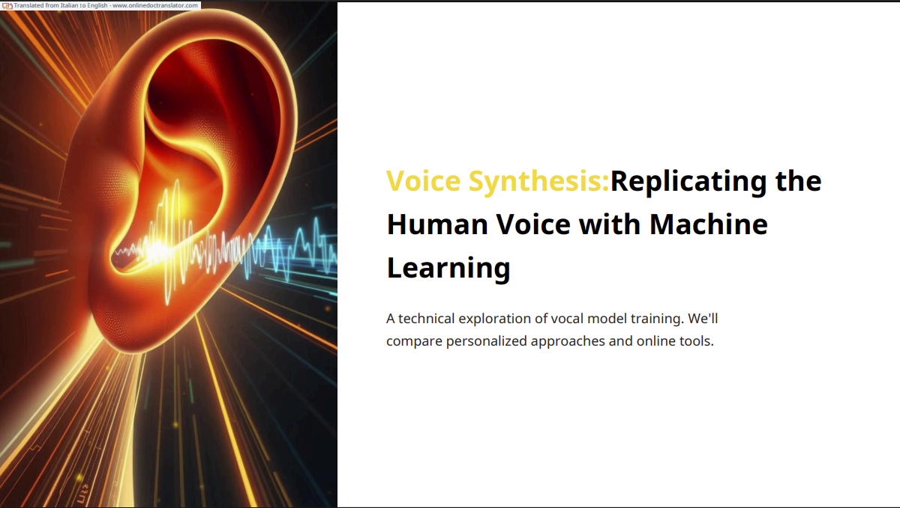

Research project focused on replicating the human voice using machine learning techniques and modern Text-to-Speech workflows.
This showcase presents the full study material, methodology, and practical outcomes in a structured document format.
